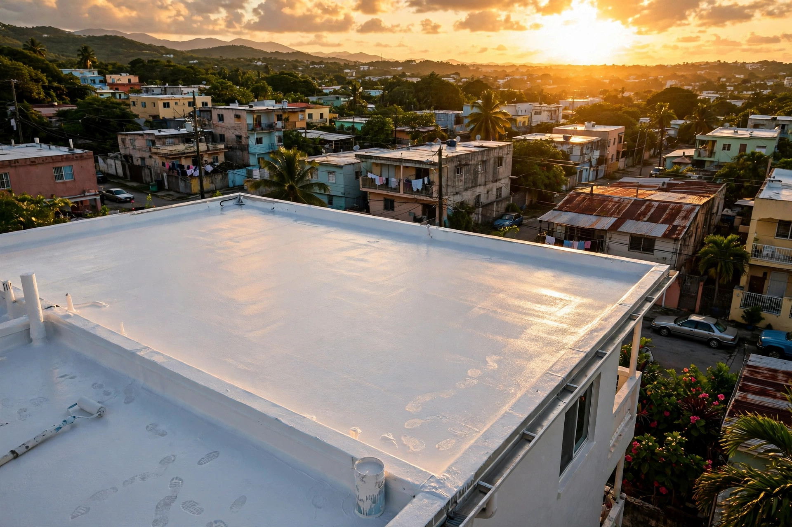

PROY-001Isabela · Área oeste de Puerto Rico
Sellado y tratamiento de techos + handyman en Isabela y el área oeste. Un solo equipo para tu techo y tu casa.
Galería
Lo que hacemos
Sellado profesional para que la lluvia no entre más a tu casa.
Lavado, reparación y primer: la base para un sellado que dure.
Reparaciones menores del hogar con el mismo equipo de confianza.
Lavado profundo de techos y superficies antes de sellar.
Nosotros
Somos un equipo de proyectos en Isabela, Puerto Rico: sellamos y tratamos techos, y resolvemos reparaciones de handyman. Una sola llamada para tu techo y tu casa.
Dudas comunes
Es la preparación completa antes de sellar: lavado a presión, reparación de grietas y primer. Así el sellado agarra bien y dura años.
Sí. Además del sellado de techos hacemos reparaciones menores del hogar. Cotiza por WhatsApp al 939-433-7527 y te orientamos.
Con buena preparación y materiales de calidad, un sellado bien hecho dura varios años. La duración exacta depende del producto, la exposición al sol y el mantenimiento.
Depende del tamaño y la condición del techo. Cotiza por WhatsApp y coordinamos una visita para darte el precio exacto.
Sí, nuestros trabajos son garantizados. Escríbenos por WhatsApp y te damos los detalles.
Contacto
Esta página la creó ManuPro. Escríbenos hoy mismo y cotiza la website profesional de tu negocio.
Cotizar por WhatsApp